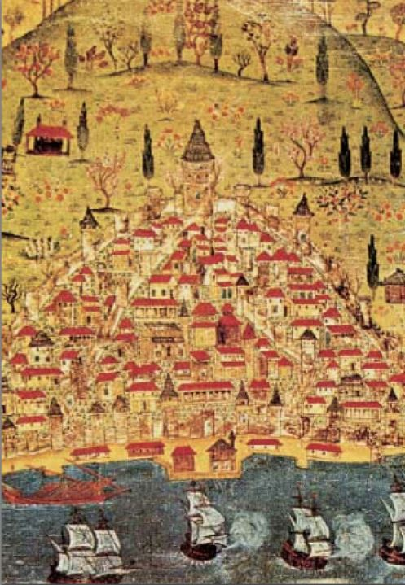

Teşekkür
En başta, kitabın görsel malzemesini sağladığım, son bölümde adları gösterilen müze ve kitaplıkların görevlilerine yardımları için teşekkürü bir borç bilirim. Engin ikonografya bilgileriyle bana yol gösteren ve bazı diapozitiflerin sağlanmasında iki dostum, Marianna Yerasimos ve Ali Özdamar ’a, zor Almanca metinlerin anlaşılmasında Petra Breiderbach ’a ve öğrencim Dr. Ayşe Selen ’e, İtalyanca metinlerde Prof. Dr. Mahmut Şakiroğlu ’na, İspanyolca metindeki katkısı için Mukadder Yaycıoğlu ’na, fotoğraf işlerindeki yardımları için Doç. Dr. Gürbüz Erginer ’e dostlukları ve katkıları için teşekkürü bir borç bilirim. Ayrıca, bu kitabın hem Türkçe, hem İngilizce yayınını gerçekleştiren Akbank ’ın değerli kültür işleri görevlilerine şükran duygularımı sunarım. Ancak, en önemlisi hep güzeli arayan, titiz çalışmasıyla görsel malzemeyi iyileştiren, sayfa düzeniyle yayına hazırlayarak gün ışığına çıkmasını sağlayan dostum Ersu Pekin ’e çok şey borçluyum. Sağ olsun.
Metin And
Yeni Baskıya Teşekkür
Bu yeni baskıda yardımları için dört kişiye teşekkür ederim. Yardımcılığımı yapan, artık dışarıya çok çıkamadığım için kitabın hazırlığında canla başla çalışan Yeşim Gökçe’ye, fotoğraf işlerinde katkılarda bulunan Ruhi Tömbekici’ye, kitabın dizgisini yapma fedakârlığını gösteren Akgül Yıldız’a, asıl önemlisi YKY’de daha önce yayımlanan kitaplarımda olduğu gibi bunu da büyük titizlikle ve engin bilgisiyle yayına hazırlayan sevgili dostum ve editörüm M. Sabri Koz’a sonsuz teşekkürlerle...
Metin And

İkinci Baskıya Önsöz
1927’de İstanbul’da doğdum, üniversiteyi bitirdiğim 1950 yılına kadar 23 yıl hep İstanbul’da yaşadım. Yazları da İstanbul’un çeşitli semtlerinde ama daha çok Boğaziçi’nde geçirdim. Daha sonra adresim Ankara oldu, ne var ki bir ayağım hep İstanbul’daydı. Bu bakımdan her İstanbullu gibi bu büyülü kenti çok sevdim. Burada da neredeyse âşık olduğum yer Süleymaniye Câmii’dir. Öyle ki, ne zaman bir deprem olsa ilk aklıma gelen soru: “Acaba Süleymaniye Câmii’ne bir şey oldu mu?” Bu sevgi ile dolu olarak İstanbul üzerine bir kitap yazmak istedim.
Bu kitabın fikri 80’li yılların başında içime doğdu. Gene İstanbul’un daha doğrusu imparatorluğun en parlak dönemi 16. yüzyılı seçtim. Burada İstanbul’a 16. yüzyıldaki günlük yaşam bakımından yaklaşacaktım. Ama kitabın ana konusu bu olmakla birlikte Kent’e ve Saray’a da yer vermek istedim. Kitapta kaynak olarak yalnızca tanıkların anlattıklarıyla kendimi sınırladım, bir başka deyişle ikinci el kaynakları hiç kullanmayacaktım. Bunlar Fransızca, İngilizce, Almanca, İtalyanca ve İspanyolca tanıklıklardı. Üç tane de Türkçe kaynak kullanacaktım. Bunlarda verilen bilgilerin doğruluğu hiç kuşku götürmez. Çünkü bunları yazanlar daha çok krallarına, imparatorlarına genelde Türkiye’yi, özelde İstanbul’u tanıtıyorlardı. Verdikleri bilgilerin doğru olması gerekiyordu.
Bu kitabın İstanbul’un güzelliğine uygun düşen bol resimlerle desteklenmesi gerekiyordu. 1959 yılında Viyana’da Avusturya Ulusal Kitaplığı’nda on gün boyunca çalışmıştım. Burada son günüm cumartesi idi, ertesi gün de Viyana’dan ayrılıyordum. İşte bu yarım günde üç önemli buluşum oldu. Kuşkusuz bilim dünyası bunları biliyordu, bunlar benim için bir buluştu. Büyük bir hızla bunların sayfalarını çevirdim. İlk 7 cilt, daha sonra Çarşı Ressamları adı altında incelemeye alacağım albümlerdendi. Ancak bunlar 4 cilt sayılır. Çünkü üç cilt daha önceki üç cildin kopyasıydı. Öteki iki cilt ise şahane resimlerin bulunduğu iki albümdü. Bunlardan 8626 no’lusu olağanüstü güzellikteydi. İkinci cilt (8615) resim sanatı bakımından zayıftı ama belgesel değeri büyüktü. Ben bunların sayfalarını çevirip notlar alırken yanımda oturan Balkanlar’dan bir Türkolog hanım çalışmasını bıraktı, göz ucuyla benim çevirdiğim sayfalara bakıyor ve notlar alıyordu, kimi de benden rica ediyor, biraz durmamı istiyor, notunu tamamlıyordu. Zamanla yarışmam kitaplığın kapanmasına kadar sürdü, ben de gerekli notları almıştım.
Türkiye’ye dönüşümde Viyana’da oturan bir dosta yazdım, bunların mikrofilmlerini istedim. O yıllarda bu işler çok kolaydı. Bugün yazmaların sayfalarını çevirmek bile yasaklanmıştır. Yalnızca incelemek için mikrofilmlerine bakılıyor. Dostum kısa bir sürede üç makarada bunların negatif mikrofilmlerini gönderdi. Bunlara yapılmaması gereken, sonra da pişmanlık duyduğum bir işlem uyguladım: Bunları makasla ikişer, üçer karelik şeritler halinde kestim ve fotoğrafçıya da bunları kâğıda çektirdim. Bu resimleri çeşitli yazılarımda kullandım. Öyle ki bazı maddeler yazdığım Meydan-Larousse Ansiklopedisi’nde onların işine yarar diye gönderdim. Bunların Avusturya Ulusal Kitaplığı’ndan alındığını belirttiğim halde onlar bu resimlerin kaynağını Metin And Arşivi diye göstermişlerdi. Ayrıca bu resimleri ilgilendikleri konular bakımından dostlara da verdim. Bu arada çok sevdiğim dostum Prof. Halil İnalcık’ın 1973’te Amerika’da yayımlanan The Ottoman Empire adlı ünlü kitabı için bu resimlerden gönderdim. Bunlardan 32 resmi kitabına aldı.
Bu kitabı 80’li yılların başında planlarken aklımda hep Viyana’daki iki albüm vardı, ama bu kez renkli olarak. Ankara’daki Avusturya Büyükelçisini tanıyordum. Bir gün konuyu ona açtım, kendisi bu konuda yardımcı olacağını söyledi. Mekanizmayı kurduk. Ben ona hangi resimleri istediğimi söyleyecektim, siyah beyaz örnekler verecektim, o da bunları gönderecekti. İlk gelen diaların boyu beni şaşırttı, bunlar çok büyük dialardı. 18x24’ten başlayarak orijinal resmin tam boyutlarındaydı. Her dianın 3 aylık kirası bin Avusturya Şilini’ydi. Eğer bu üç ayı bir gün geçirseniz dia başına 200 Şilin de ceza veriyordunuz. Bu Ankara-Viyana arasındaki trafik aylarca sürdü. Bu konuda büyükelçinin özel sekreteri benim yakından tanıdığım büyük bestecimiz Necil Kâzım Akses’in kızıydı. Bu trafikte onun da büyük yardımı oldu. Şimdilerde Halkbilim Profesörü Gürbüz Erginer, bilim dalındaki başarıları yanında teknik alanların hemen her dalında olağanüstü yetenekleri olan bir candan dosttu. Bu dev boyutlu diaları pencereye koyuyor, ayaklı fotoğraf makinesi ile kopyalarını çıkarıyorduk. Üç ayı beklemeden bir iki hafta içinde işi biten diaları geri gönderiyor, yenilerini ısmarlıyordum. Ancak bunların birinde çok zor durumda kaldım. Tokyo Üniversitesi beni bir yıllığına hem bir kitap yazmak hem de seminerler ve konferanslar vermek üzere Tokyo’ya çağırdı, ancak bir yıl değil üç buçuk ay kalabileceğimi söyleyerek kabul ettim. Yola çıkmama bir iki gün kala elçilikten yeni diaların geldiği haberini aldım. Bunların kopyalarını çıkarmamın olanaksız olduğunu, bunların büyükelçinin kasasında durmasını, Japonya’dan dönüşümde bunların kopyalarını alacağımı söylesem de kütüphane bunu kabul etmemişti, böylece bu parti diaların her biri için iki yüz Şilin ceza ödeyecektim. Bu da son partiydi. Bu Viyana diaları için bankadaki bütün birikimim erimişti. Bunları anlatmamın bir nedeni var, bunu da aşağıda açıklayacağım.
Sıra başka albümlerin çekimindeydi. En önemli kaynaklardan biri Cambridge’deki Freshfield Albümü’ydü. Bu çok kolaydı. Ayrıca Almanya’da dört albüm vardı. 1987 yılında bir yarıyıl ders vermem için Almanya’ya Giessen’deki Justus Liebig Üniversitesi beni çağırdı. İki konuda ders verirken zamanım çok boştu. Sürekli seyahatler yaptım. Almanya’da Kassell, Coburg ve Bremen’deki albümleri inceleyip bunlardan da dialar sağladım. Ancak Dresden’deki bir albüme erişmekte zorlandım. Bir gün Bonn’dan Büyükelçimiz Oktay İşcen’den bir telefon geldi. Kendisi gençlik arkadaşımdı. Beni elçilikte verilecek bir akşam yemeğine davet ediyordu, gece üniversiteye dönmem güç olacağı için gece yatısına kalacaktım, ayrıca o gece bir de kısa bir sihirbazlık gösterisi yapmamı rica ediyordu. Yemekten sonra geceyi orada geçirdim, ertesi sabah kahvaltısında Doğu Almanya’daki elçimize telefon etmesini, ona bir mektup yazacağımı söyledim ve elçinin adını ve adresini istedim. Yazdığım mektupta büyükelçiden Dresden Albümü’ndeki resimlerin dialarını istiyordum. Yanıt birkaç hafta sonra geldi: Bunların diaları yalnız Doğu Almanya’da ikamet edenlere veriliyormuş. Türkiye’ye döndüğümde ikonografi üzerine engin bilgisinden yararlandığım Galeri Alfa’nın kurucusu dostum Marianna Yerasimos’a Dresden Albümü’nü anlattım. Onun hayat arkadaşı ve iş ortağı Ali Özdamar yanımızdaydı. Onun kız kardeşi Doğu Almanya’da oturuyormuş. Ona yazdılar, birkaç hafta sonra albümün bütün resimleri geldi. Yalnız çok uzun olan çeşitli geçit alayları çok küçük çıktı. Bu yeni baskıda bunları büyük göstermek için parçalara ayırıp ikişer sayfaya sığdırdım.
Resimler ve metin tamamlanınca bunun dışarıda yayımlanması olanaklarını aradım. Renkli, hatta renksiz resimli kitapların yayımlanma olanağı yok gibiydi. Belki bu kitabı İngilizce olarak büyük kuruluşlar basar diye düşündüm. Çok değerli bir ressam olan Gürol Sözen’le konuşuyordum. O, aynı zamanda Akbank’ın kültür işlerini yürütüyordu. Akbank her yılbaşında bir kitap yayımlıyordu. Bana böyle bir kitabım olup olmadığını sordu. Ben yeni bitirdiğim bir kitabım bulunduğunu, yalnız metnin İngilizce olduğunu söyledim. Çok ilgilendi. İstanbul’a tekrar gidişimde kitabın dialarını ve kitabın içeriğini özetle gösterdim. Konuyu bir kurula götürmüş, çok beğenilmiş, yalnız bir de Türkçesini istediler; çeviri, en yapamadığım işlerden biridir. Kendimi zorladım ve yaptım. İki kitap aynı zamanda basılacaktı. Bu işi Türkiye’de en önde gelen kitap tasarımcısı Ersu Pekin’e verdiler. Gerçekten o bir virtüözdü, onunla sonra üç kitap daha hazırladık. Ersu’nun elinde bir kitap değerli bir nesne görünümü kazanıyor, elinizde tutmaktan belli bir tat alınıyor.
Kitabın baskı aşamasında önemli bir sorun çıktı: İngilizce ve Türkçe metinlerin aynı uzunlukta olması gerekiyordu. Önce resimler basılıyordu, bunlar İngilizce ve Türkçe kitapların toplam sayısı kadar basılıyor, sonra da boşluklara metinler yerleştiriliyordu. Bu bakımdan her bölüm iki kitapta da aynı yerde bitmesi gerekiyordu. Bunun için acele İstanbul’a çağrıldım. Kitabın basıldığı matbaadan beni istiyorlardı. Ben de hemen gittim. Oradaki operatör beni bilgisayarın başına oturttu. Örneğin birinci bölümde İngilizcede üç satır fazla diyordu. Anlamı bozmadan üç satır çıkarıyordum. Uzun olan İngilizce metindi. Son bölümlerden birinde 16 satır fazlalık çıktı. Yarım saat kadar zorlandım, o da oldu.
İki kitap da aynı zamanda çıktı, ikisinin de kapağında aynı resim yer almıştı. Ancak banka bunu satışa çıkarmadı, kendi hatırlı müşterilerine, yüksek düzey bürokratlarına, milletvekillerine gönderdi. Kitabın ikisini de gençliğinden bugüne kadar hep İstanbul’u incelemeye adamış, bu konuda çok sayıda yayını bulunan, İstanbul’un hem Osmanlı dönemini, hem de daha önceki dönemlerini incelemiş büyük bilgin dostum Prof. Semavi Eyice’ye ithaf ettim. Kitabı göndermelerini istediğim kişilerin listesinin başına Semavi Eyice’nin adını ve adresini koydum. Bir iki hafta sonra Semavi Eyice telefonla beni aradı, sitemli bir tonla “Metinciğim, lütfetmişsin İstanbul kitabını bana ithaf etmişsin, ama kitabı bana göndermedin” dedi. Sanki yer yarıldı yerin dibine girdim, hemen postayla her iki kitabı onun Bostancı’daki adresine yolladım.
Banka bu iki kitabı tek kitap sayarak çok mütevazı bir para ödedi. Şöyle bir hesap yaptım, benim bu kitap için harcadıklarım bana ödenen paranın en azından yirmi katıydı. Ancak benim para konularını konuşamamak gibi bir çekingenliğim vardı. Zaten benim için en büyük ödül kitabın yayımlanmış olmasıdır. Ancak kitapların kitapçılara dağıtılarak meraklısının eline geçmesi de çok önemliydi, bu olmadı; neyse şimdi daha küçük boyda olmakla beraber YKY’de çıkmasıyla kitabın tükendikçe yeni baskıları yapılacak, böylece ilgilenen her okuyucunun her zaman alabileceği bir kitap olacak.
Ancak kitaptaki resimler için korsanlık yapıldı. Özellikle bazı tarihçi ve editörler bu resimlerden istediklerini yazılarında, kitaplarında, dergilerinde kullanıyorlardı. Bütün yayınları göremediğim için bu işin boyutlarını bilmiyorum. Tek bir örneği belirteceğim: Bir yıl boyunca her sayısına yazı yazdığım aylık bir dergi vardı. Aynı dergiye bir tarihçi de yazıyordu. Bir sayıda baktım, Osmanlı’da cezalar üzerine yazısında benim Viyana I’den kitaba koyduğum ceza resimlerinin hepsi bu yazıya da alınmış, üstelik kaynak da gösterilmemiş. Diyelim ki o ya da dergi editörü bunları Avusturya Ulusal Kitaplığı’ndan almış; ama şimdi anlatacağım olayda bir tarihçiden hiç beklenmeyecek bir eylemine rastladım. Söz konusu tarihçi, Sultan IV. Murad üzerine bol resimlerle bir yazı yazmış. Öteki resimler bildiğimiz resimler, fakat bununla yetinilmemiş, çok kişinin bildiği IV. Murad’ın gece teftişi de gösterilmek istenmiş, benim kitaptaki bir resim buraya alınmış. Oysa IV. Murad 17. yüzyılda yaşamıştır, benim kitaptaki sultan ise 16. yüzyılda. Bu, III. Murad olabilir, ama at üstünde yanındaki adamlarının fenerlerle yollarını aydınlattığı kişi Sultan değil Yeniçeri ağasıdır. Böylece okuruna 16. yüzyıldaki Yeniçeri ağasını Sultan IV. Murad diye tanıtmış. Bu kadar da değil, bu çok sevdiğim resmin baskıya girmek üzereyken renklisini kaybettim, elimde aynı resmin siyah beyazı vardı, onu kullandım. Suluboya resimle gravür fark edilmeyecek bir şey değil ama nedense buraya resim siyah beyaz olduğundan gravür yazılmış. Aynı yazarın bir başkasıyla yazdığı bir kitabını gördüm. 16. Yüzyılda İstanbul kitabımın ilk basımında hem İngilizcesinin hem Türkçesinin kapağındaki Çemberlitaş’ta bir bayram yerini gösteren çok kişili, hareketli resim de kaynak gösterilmeden bu kitaba alınmış. Bu işi hazırlayanlar mı editörler mi yapmış bilemiyorum. Bu satırları okuyanlar yukarıda uzun uzun bu resimleri ne güçlüklerle sağladığımı anlatmamın nedenini ve üzüntümün kaynağını şimdi anlamış olacaklardır.*
Bu kitapta hiç minyatür kullanmamaya kararlıydım. Kitabın ilk baskısının tasarımını yapan Ersu Pekin, Matrakçı Nasuh’un ünlü İstanbul panoramasını koymamı istedi, ben önce karşı çıktımsa da sonra yerinde bir öneri olduğunu anladım. Böylece bazı panoramalarla karşılaştırmak olanağını bulacaktım. Nitekim Freshfield Albümü’nden aldığım At Meydanı’nı gösteren resimde Ayasofya’nın yanı başında büyük bir bina görülür, aynı bina Matrakçı’da da vardır. Bu, Roma döneminde yapılmış Zeuksippos Hamamı’dır. İmparator Konstantinus döneminde onarılmış, içine çok sayıda heykeller konulmuş, zengin bir biçimde bezenmiştir. Bu binadan günümüze bir taş bile kalmamıştır. Gene Freshfield’in aynı resminde bugün Sultanahmed Câmii’nin bulunduğu yerde Vezirlerden birinin sarayı (Ahmed veya Sinan Paşa) görülüyor. Günümüze kalmamış pek çok bina ve anıtın resimlerini buluyoruz. Viyana I’den Üsküdar panoramasında Harem-Salacak’ın olduğu yerde büyük ağaçların arasında Kavak Sarayı gözükmektedir. Kanûnî Sultan Süleyman döneminde yapılmış bu saraya daha sonraki sultanlar için Mimar Sinan iki köşk ve hamamlar yapmıştır.
17. yüzyılda Grelot’nun iki gravürü, 18. yüzyılda da Hilair’in gravürü ve başkalarının resimlerinde saray çok iyi anlaşılmakla birlikte Viyana II’de orman gibi kavak ağaçları bu resimlerde görülmemektedir. Buradaki bahçeye Fenerli Bahçe de deniliyordu. Çok sonra burası yıkılıp yerine Selimiye Kışlası yapılmıştır.
Eski Saray’ın pek resmi yoktur. Ancak Viyana I’den İstanbul panoramasında Bayezid Câmii ile Süleymaniye arasındaki üçgen biçiminde duvarlarla çevrili yerleşke Eski Saray’dır. Matrakçı’da ise bu dikdörtgen çizen duvarlar içinde Eski Saray daha iyi görünmektedir, çünkü kuşbakışı yapılmıştır. Üçgen biçiminde olması daha doğrudur. Çünkü buraya aldığımız iki sayfada Süleymaniye Câmii’nin yanından geçen sarayın duvarları eğridir. Buna ek olarak kitaba Melchior Lorichs’in dev panoramasının Bayezid ve Süleymaniye câmilerinin kesimini aldık. Bu iki câmi arasında Eski Saray’ın üçgen biçiminde duvarları gösterilmiştir. Ayrıca Lorichs, yerleşkede yer alan binalardan bazısı gösterilmiştir. Ancak Matrakçı’da Süleymaniye Câmii yoktur, çünkü Süleymaniye Câmii’nin yapımı daha sonradır.
Topkapı Sarayı’nı gösteren resimlerde de günümüze kalmamış bazı yapılara rastlanır. Örneğin birinci avluda halkın dilekçelerini verdiği Deâvî Kasrı gibi. Haliç’in Kuzey sahilini gösteren Panorama’da Galata ve Kasımpaşa’da da günümüze kalmamış birçok bina vardır. Bunların en önemlisi Kasımpaşa’da her bir göze bir gemi giren Tersane’nin görünümüdür. Matrakçı panoramasında İstanbul’un Marmara sahili de gösterilmiştir, burada Kadırga Limanı’nda da tersane olduğu gösterilmiştir.
Günümüze kalmamış bir bina da Elçi Hanı’dır. Bu, Çemberlitaş’ta Atik Ali Paşa Külliyesi’nden bir binadır. Bu adı almasının nedeni elçilerin burada oturmasındandır. Buraya birçok resimler aldığım Viyana II Albümü’nde Elçi Hanı’nın da üç resmi vardır. Bende üçünün de siyah beyaz resmi vardır. Semavi Eyice, Elçi Hanı üzerine bir monografi hazırlıyordu. Benden bu resimleri istedi, ben de gönderdim. 1970’te monografisi yayımlanınca bundan ayrı baskı gönderdi. Bu Kervansaray’ın güneyinde Çemberlitaş’ın yukarı kısmı da görülmektedir. Bu yeni baskıya da ilkinde olduğu gibi Viyana II’den Elçi Hanı’nı gösteren bir resim koydum. 17. yüzyılda elçilerin Galata’da oturmalarına izin çıkmış, onlar da Elçi Hanı’ndan ayrılmışlardır. Han daha sonra yıkılmış, yerine bir matbaa yapılmıştır.
Binalar için bu örnekleri verdikten sonra anıtlara geçersek Freshfield Albümü’nden alınan bu anıtlar bize bir fotoğrafın verileri kadar gerçekçi bilgiler sunar. Bunların en önemlisi Avrat Pazarı’ndaki Arkadius Sütunu’dur. Bu sütundan günümüze tek bir iz kalmamıştır. Freshfield Albümü’nde üç açıdan üç ayrı resim olarak verilen bu sütunun üzerindeki resimler tek tek yapılmıştır. Gerçi filmin hafif bulanık olmasından sütun üzerindeki sarmal kabartmalar pek açık seçik olmamakla birlikte kaidedeki kabartmalar pek belirgindir. Hemen belirtelim, kaidesinde oda ve yukarıya çıkan merdivenin sahanlığı vardır, en sağdaki resmin solunda buraya girilen kapı gözükmektedir. Bu baskıya yalnızca o resmi aldım.
Freshfield Albümü’nde başka anıtların resimleri de böyle ayrıntılı çizilmiştir. Örneğin At Meydanı’ndaki örme taştan sütunun kaidesindeki Yunanca yazılar okunabilmektedir. Mısır Sütunu dört bir yandan 4 resim olarak çizilmiştir. Bunların kaidesindeki taş üstünde kabartma resimler günümüzde aşınmış, silinmişken resimde tam gerçeklikle verilmiştir. Burma veya Yılanlı Sütun’a gelince, üç yılanın başı 18. yüzyılın başına kadar varken sonra yok olmuşlardır. Çılgın bir Polonyalı bu üç yılanbaşını kopararak götürmüştür. Gerçi bu başlar için Freshfield Albümü’ndeki resme gerek yoktur, bu sütunu başlarıyla birlikte gösteren sayısız minyatür de vardır.
İlk baskıdaki her iki kitap çok güzel olmuştu. Bu güzellik uğruna tutturulmak istenen ölçülerden dolayı bazı resimlerde önemli sayılabilecek ayrıntılar yok olmuştur. Örneğin Dîvân-ı Hümâyûn’un toplandığı yerde en önemli sayılabilecek bir öğe padişahın Dîvân oturumlarını izlediği kafesli pencere kaldırılmıştır. Dîvân’ı toplantı halinde gösteren resimde Kubbealtı vezirlerinin sarıklarının üstü kesildiği gibi bu pencere de yoktur. Gene Kubbealtı vezirlerinin Avusturya İmparatorluk elçisiyle yemek şölenini gösteren iki sayfalık resimde de bu pencere kaldırılmıştır. İki atlı oklarını uzun bir direk üstündeki yuvarlak hedefe nişan almışken, bu yuvarlağın önemli bir kesimi yok olmuştur. Viyana I’den alınan İstanbul panoramasında da Sarayburnu’nun en ucunda deniz başlamadan kesildiği için buradaki Üsküdar ve Kadıköy’ün az gözüken kısımları kaldırılmıştır. Panoramanın sonunda Eyüp Sultan’daki mezarlığın bir kesimi gözükmektedir, Panorama buraya gelmeden önce kesildiği için Fener Rum Ortodoks Patrikhanesi ve başka binalar da yoktur. Neyse, bu andıklarım ve belirtmediğim eksikler bu baskıda tamamlanmıştır. İlk baskıda kitapta bölümlerle ilgisi olmayan resimler boşluklara konmuştu. Yeni baskıda bunlar kaldırılmış, yerine ilk baskıda olmayan resimler konmuş, metne de bazı eklemeler yapılmıştır. Birinci baskıda olmayan Dizin’i YKY’de her yayımlanan kitabıma yaptığı gibi sevgili editörüm M. Sabri Koz ayrıntılı bir biçimde hazırlamıştır.
İkinci baskıya yazdığım bu önsözde karşılaştığım güçlükleri gösterdim. Ancak 5 ayrı dilde tanıkların kitaplarının Türkçeye çevrilmesinde de güçlüklerle karşılaştım. Bunları dostların yardımlarıyla göğüsledim. Gerçi daha sonra Dernschwam, Schweigger, Gerlach gibi tanıkların kitaplarının Türkçeye çevrildiğini öğrendim. Bunları görmedim, ama zaten bundan sonra bunları incelemek benim için olanaksız bir çaba olurdu. Bu güçlükleri yenmede beni yüreklendiren tek itki sonsuz bir İstanbul sevgisiydi. Bu büyülü kenti en parlak döneminde inceledim. Bunu başarıp başaramadığıma karar verecek kuşkusuz en doğru hakem kitabın okurlarıdır. Onlara yemyeşil, huzur içinde, toplumsal yaşamı uyumlu bir İstanbul sunduğumu sanıyorum. Bu da beni mutlu kılacak önemli bir neden.
Ankara, 24 Ağustos 2008
Metin And
Editörün Notu
Çok sevgili hocamız, bu kitabın dizgi ve düzelti aşamalarında yeni baskının, “İkinci Baskıya Önsöz”de açıkladığı gibi düzenlenip tasarlanmasında katkılarda bulunmuş, eski ve yeni resimlerden oluşan dialarını bölümlere göre tasnif ederek kodlamış, ilk baskıda tasarım sırasında kesilen bazı resimlerin bütün olarak yer almasını sağlamıştı. Her zaman olduğu gibi parça parça yapıyordu işlerini. Metni okumuş, ilk baskıdan zihninde yer etmiş yanlışlıkları düzeltmiş ve bazı bölümlere gerekli gördüğü ekleri elleriyle yazmış, bu baskının YKY’deki öteki kitapları gibi basılması için gayret ve heyecana gelmişti.
“İkinci Baskıya Önsöz” 24 Ağustos 2008 tarihini taşıyor. Hocamız ise 30 Eylül 2008’de öldü. Aradaki bir ay bizim için ebedî sessizlik ve boşluğun bir hazırlayıcısı olmalı ki, beklediğimiz yeni resimlere ait resim altları bir türlü gelemedi, Önsöz’de tartışılması, değiştirilip yumuşatılması gereken yerler üzerinde de duramadık. Resimler için yazacağını söylediği alt yazıları sevgili kızı Esra And da, bir dönem yardımcısı olan Yeşim Gökçe de evde bulamadılar. Bu yüzden ya resim altları olmadan basacaktık kitabı ya da eski baskıdaki resimlerle yetinecektik. İkinci seçenek ağır bastı. Ancak kimi resimleri onun arzu ettiği ayrıntıları verecek biçimde kullandık, kimilerinde de titizlikle istediği temizleme ve düzenleme işlerini yaptık.
Metin And için resim, bazı kitaplarda metnin önüne geçer, haydi abartmayayım metinle atbaşı gider. Kaynaksız, altyazısız resim dilsiz bir insan gibi olacağından bunun yerine ne ve kim olduğunu bildiğimiz, bize söylediklerini anladığımız eski resimleri tercih etmek zorunda kaldık. Bu konuda üzgün olmak, onu yitirmiş olmanın üzüntüsüyle karşılaştırılamazsa da arzusu yerine gelmediği için mahcubuz.
Bunu Metin And’ın son şakası sanmasın kimse, onun şakaları bitmez. Birkaç yarım kalmış kitabıyla devam edip bir süre daha varlığını sürdürür şakalar... Sevgisini, sıcaklığını hissediyor; yokluğunun “gerçek bir yokluk” olduğunu her geçen gün daha iyi anlıyor, onu özlüyoruz.
M. Sabri Koz
Giriş
Bu yapıt, 16. yüzyıl İstanbul ’undaki günlük yaşamı sergilemektedir. Bu nedenle uzamda İstanbul, zamanda 16. yüzyılla sınırlandırılmıştır. Bir yüzyıl öncesine veya sonrasına bir yıllık bir taşma bile söz konusu değildir.
Osmanlılar üzerine araştırma yapanların, Osmanlı ’nın yönetsel yapılanmasını, hükümet örgütlenmesini, savaş hazırlıklarını, savaşlarını ve isyanlarını ve son zamanlarda da ekonomisini makro ekonomi düzeyinde ele aldıklarına bakıldığında, Osmanlılar ın sosyal yaşamı gözden kaçmış gibi görünmektedir.
Bu yapıtın hiçbir bölümünde ikinci bir araştırma, bilimsel inceleme veya kaynağa rastlamayacaksınız. Birinci el kaynaklar üzerine ben de hiçbir yargı, yorum veya değerlendirmede bulunmadım. Yapıtın malzemesini zamana tanıklık etmiş olanların belgeleri oluşturmaktadır. Bu belgeler iki kategoride sunulmaktadır: Türkler tarafından yazılanlar ve yabancılar tarafından yazılanlar.
Türk tarihleri ve diğer tarihsel incelemeler savaşlara, savaş hazırlıklarına ve hizmetkârları ile sultanların ilerleme ve başarılarına etkileyici bir biçimde yer ayırmışlardır. Ancak sıradan insanların sosyal veya günlük yaşantılarına ait hemen hemen hiç bilgi yoktur. Az da olsa bu tür bilgilere edebî eserler ve arşivlerde rastlanmaktadır. Bunları arayıp bulmak çok zordur ve zaman kaybına neden olmaktadır, üstelik bu iş bilimsel birikim gerektirir. Yine de, kitabımın Kaynaklar Üzerine Notlar bölümünde üç Türk kaynağı gösterilmiştir.
Sosyal yaşam bağlamında yabancı tanıklarca sağlanmış bilgiler daha zengindir. Söz konusu bilgiler seyahatnâmelerde, günlüklerde ve gezginlerle diplomatların mektuplarında bulunmaktadır. Ancak bu yabancı kayıtlar, her tür yanlış anlama, abartı, çarpıtma ve bilerek uydurma sonucu bozulmuşlardır. Kimisi yetersizdir, kimisi ise zaten var olan kargaşayı körüklemektedir. Kimi zaman çelişik ve belirsizdir. Yine de birkaçı, bilimsel merakla donanmış, tarihe karşı sorumluluğunun bilincinde olan, güçlü ve dikkatli gözlemcilerin kaleminden çıkmıştır. Dahası, birçoğunun aynı konuya eğilmeleri onların doğruluklarını denetleme olanağı vermektedir.
Kendilerine tozlu arşivlerin raflarında dinlenecek bir yer bulmuş olan yazmalarla bu birinci elden belgelerin birçoğu henüz yayımlanmış değildir. Kimilerine ben ulaşamadım; kimilerini de çözmek zordu. İkinci gruptakilere bir örnek olarak III. Murad ’ın sarayında görevli bir İtalyan hekimin tuttuğu kayıtlardan söz edeceğim. Relazione della gran città di Constantinopoli olarak kısaltılmış ad altında British Museum ’da (Harl. MSS. 3408) elyazması bulunan hekimin adı Domenico Hierosolimitano idi. Bir başka örneği de Lambert Wyts ’ın Reiseberichte ’si oluşturmaktadır. Bu yazmanın, Viyana Ulusal Kütüphanesi ’nde (Cod. 3325) bulunan mikrofilmine başvurduysam da Fransızca metni çözmekte zorluk çektim. Ancak bu yazma bazı suluboya resimler içeriyor; bunların birinden yararlandım. Venedikli elçilerin raporlarında aktardıkları değerli gözlemlerden de yararlanılabilir. Ancak itiraf etmeliyim ki, ara sıra değinsem de, yayımlanmış olan seksen kadar cildi ayrıntılı bir biçimde incelemiş değilim.
Bu kitapta kullanılmış olan belgelerin çoğu Almanca ve Fransızca ’dır; diğerleriyse İngilizce ve İtalyanca, bir tanesi de İspanyolca ’dır. Okuyucuya kolay anlaşılır bir biçimde sunmak amacıyla kaynaklarımı doğrudan alıntı olarak aktarmadım. Bunun yerine, bunları kendi sözcüklerimle anlattım, yer yer de kısalttım. Meraklılar için sayfa numaralarını verdim. Aynı konu hakkında birden fazla tanık olduğunda birbirleriyle karşılaştırma yapılabilsin diye tümünün dediklerini aktardım.
Baştan sona karşılaşılan en büyük güçlük bu denli engin kaynak arasındaki dengeyi sağlamaktı. Bu nedenle, özellikle dinsel konuları, İslâm ’ın prensiplerini, hükümet örgütlenmesini, ordu ve benzerleri üzerine kimi bilgileri kitabın dışında bıraktım.
Bu kitapta kullanılan ikinci bir grup kaynağı da görsel malzeme oluşturmaktadır. Kenti ziyaret edenlerin birçoğu vatanlarına döndüklerinde deneyimlerini arkadaşlarıyla veya amirleriyle ya da hükümdarlarıyla paylaşmak ve anılarını tazelemek amacıyla gördüklerinin resimlerini, karalamalarını veya gravürlerini yapmışlardır. Nicolas de Nicholay, Jérôme Maurand, Schweigger ve Heberer bize böylesi çizimler bırakmışlardır. Ancak bu çizimler siyah beyazdır. Ben renkli olanları yeğledim ve özellikle bunları kullandım. Bunlar 19 albümde yer almaktadır, fakat kimini kullanamadım. Örneğin Leningrad ’daki (Sen-Petersburg) Hermitage Müzesi başvurumu yanıtlamadı. Oysa, albümlerin çoğu bu kitapta örneklenmişti. Söz konusu yazmalarda yer alan resimlerin iyi çekilmiş modern fotoğraflardan, bilgi aktarma bakımından, aşağı kalır yanı yoktur. Seçim yaparken, aktardığım belgeleri resimlemeyi hedefledim. Ressamlarla yazarlar birlikte yolculuk yaptıklarından, metin ile resim birbirini tutuyor ve resimler anlatılanları aydınlatıyor.
Kitap üç ana bölümden oluşmaktadır. Önce, Kent. Bu bölüm panoramalarıyla, anıtlarıyla, surlarıyla, ulaşımıyla, evleriyle, insanlarının ve binalarının sayımıyla, câmileri, hamamları, su kanalları ve bahçeleriyle 16. yüzyıl İstanbul ’unu konu edinmekte ve üç ana bölgesini betimlemektedir. Her bir bölge ayrı bir kente benzetilmiştir. İstanbul merkez, Galata-Pera ve Üsküdar. Yangın, kıtlık, deprem ve salgın hastalıklar gibi felaket ve afetler olduğu kadar, düzenin sağlanması, kamu sağlığının korunması ve kentin temizliği de kitabın kapsamındadır.
İkinci bölüm Saray ’a ayrılmıştır. Topkapı, diğer saraylar ve Sultan’ın sarayının betimlemeleri burada yer almaktadır. İmparatorluğun yaşantısı Dîvân ’ın önerilerde bulunduğu, sadrazamın yardım ettiği Sultan’ın kişiliğinde doruğa ulaşıyordu. Okuyucu burada, hükümdarın halkın içine nasıl çıktığına, nasıl av partilerine gittiğine, hanedan kayığıyla yaptığı eğlence gezilerine şenlik ve yemeklere dair betimlemeler bulacaktır. Saray törenlerini anlatan bölümlerde hükümdarın Dîvân ’a başkanlık edişi ve büyükelçileri kabul edişi sergilenmektedir.
Halk’ı ele alan üçüncü bölüm kitabın ana bölümünü oluşturmaktadır. Hepsi kentin yaşamına ayrı bir renk katan değişik ırk, dil, din ve âdetlerle bezenmiş çok sayıda insan yaşıyordu İstanbul ’da. Alıntılar bunların giyimlerini, evlilik âdetlerini, yemelerini, içmelerini, denizlerdeki balıkları ve diğer ürünleri, ödemek zorunda oldukları fiyatları, kadınların yaşamlarını, etiket kurallarını, toplumsal normları, cezaları, fahişeliği, uyuşturucuları ve batıl inançları gözler önüne sermektedir.
Önümüzdeki sayfalar konuyu kuşkusuz tüm ayrıntısıyla sergilemiyor. Malzeme bunu gerçekleştiremeyecek kadar engin. Birçok açıdan da daha geniş bir irdelemeyi gerektiriyor, çünkü ele aldığımız dönem Osmanlı İmparatorluğu ’nun gücünün ve debdebesinin zirveye çıkmasına tanıklık etmiş. Ancak genel ve tamamlanmamış bir biçimde de olsa konuya bir giriş yapabildiysem ve 16. yüzyıl İstanbulu ’ndaki günlük yaşamın anlaşılması için yolu açtıysam hedefime ulaştım demektir.